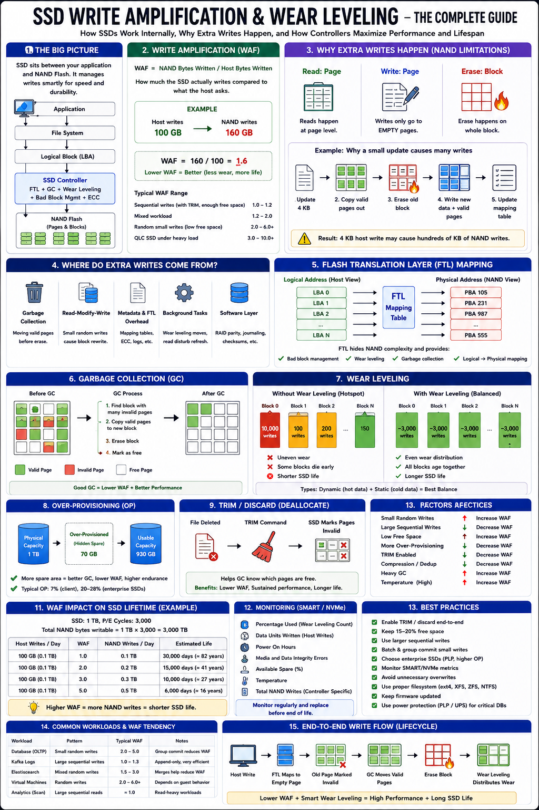

Why SSDs slow down over time and how controllers maximize endurance
The Big Picture
Unlike HDDs, SSDs cannot overwrite data directly. Every write goes through the SSD controller which manages FTL, Garbage Collection, Wear Leveling, and ECC. This extra layer makes SSDs fast — but introduces Write Amplification, the biggest factor affecting SSD lifespan.
Why SSDs Need Write Amplification
NAND Flash has a fundamental constraint:
Read
Page Level ✔
Write
Empty Pages Only ✔
Erase
Entire Block ⚠️
Write Amplification Factor (WAF)
WAF measures how much the SSD actually writes vs what the app requested:
| WAF | Meaning | Typical Scenario |
|---|---|---|
| 1.0 | Ideal (no amplification) | Large sequential writes |
| 1.1–2.0 | Good | Mixed workload, TRIM enabled |
| 2–5 | Acceptable | Small random writes |
| 5–10+ | Problematic | Full SSD, heavy GC, no TRIM |
Flash Translation Layer (FTL)
Applications use Logical Block Addresses (LBA). The SSD stores data at Physical Block Addresses (PBA). The FTL maintains this translation transparently:
The FTL also handles bad block replacement, wear leveling, and garbage collection. Applications never know where data physically resides — writes land on fresh blocks always.
Garbage Collection (GC)
When blocks accumulate invalid pages, GC reclaims them:
Foreground GC
Runs during active writes. Provides immediate free space but adds latency to application writes.
Background GC
Runs during idle periods. Lower application latency and better sustained performance. Preferred for enterprise SSDs.
More garbage collection = Higher WAF. Keeping 15–20% SSD free reduces GC pressure significantly.
Wear Leveling
Every NAND block supports a limited number of Program/Erase (P/E) cycles. Without wear leveling, frequently written blocks fail early while others sit barely used:
Dynamic Wear Leveling
Static Wear Leveling
| Feature | Dynamic | Static |
|---|---|---|
| Hot Data | ✔ | ✔ |
| Cold Data | ✘ | ✔ |
| Wear Distribution | Good | Excellent |
| Additional Writes | Low | Higher |
| SSD Lifetime | High | Highest |
Enterprise SSDs combine both dynamic and static wear leveling for maximum endurance.
Over-Provisioning & TRIM
Over-Provisioning (OP)
TRIM (Discard)
SLC Cache
Many SSDs temporarily stage writes in fast SLC (single-level cell) mode before moving to TLC/QLC:
WAF Impact on SSD Lifetime
A 1 TB SSD with 3000 P/E cycles can sustain 3000 TB of total NAND writes:
| WAF | Host Writes (100 GB/day) | Est. Lifetime |
|---|---|---|
| 1.0 | 100 GB/day → 3000 TB total | ~82 years |
| 2.0 | 200 GB/day effectively | ~41 years |
| 3.0 | 300 GB/day effectively | ~27 years |
| 5.0 | 500 GB/day effectively | ~16 years |
| 10.0 | 1 TB/day effectively | ~8 years |
Higher WAF directly multiplies the effective write rate against the SSD's endurance budget.
Factors Affecting WAF
| Factor | Effect on WAF |
|---|---|
| Small Random Writes | ⬆ Increase WAF |
| Large Sequential Writes | ⬇ Reduce WAF |
| TRIM Enabled | ⬇ Reduce WAF |
| More Over-Provisioning | ⬇ Reduce WAF |
| SSD Nearly Full (>90%) | ⬆ Increase WAF |
| Heavy Garbage Collection | ⬆ Increase WAF |
| Write Compression | ⬇ Fewer physical writes |
| Group Commit / Batching | ⬇ Reduce WAF |
SSD Monitoring — SMART / NVMe Metrics
| Metric | Meaning |
|---|---|
| Percentage Used | SSD wear (0–100%+) |
| Total Host Writes | Application writes |
| NAND Writes | Internal writes (use with host writes to derive WAF) |
| Wear Level Count | Average P/E cycles consumed |
| Available Spare | Remaining over-provisioning headroom |
| Bad Block Count | Media health indicator |
Real-World Examples
PostgreSQL
Every transaction generates WAL — many small writes increase WAF. Optimizations: Group Commit, batched fsync, enterprise NVMe with PLP, dedicated WAL device.
Kafka
Mostly sequential appends → low WAF, efficient GC, long SSD life. Ideal SSD workload.
Elasticsearch
Frequent indexing creates many small writes. Optimizations: larger bulk requests, background segment merges, dedicated SSDs per data node.
RocksDB / LevelDB
LSM-tree design buffers writes and flushes large sorted segments → sequential writes → naturally low WAF.
Staff Engineer Thinking
Junior
Why do SSDs wear out?
Senior
Why is WAF high on this server?
Staff asks
Production Failure Scenarios
SSD Performance Drops Gradually
Cause: GC running continuously on a nearly full drive · Fix: Keep 15–20% free, enable TRIM, reduce random writes
SSD Wears Out Earlier Than Expected
Cause: High WAF from small random writes without batching · Fix: Batch writes, increase over-provisioning, use enterprise SSDs
Database P99 Latency Spikes
Cause: Foreground GC blocking writes · Fix: Enterprise SSDs with larger spare area and background GC tuning
SSD Completely Full — Write Stalls
Cause: No free blocks available for GC to work · Fix: Maintain >15% free capacity; add capacity before hitting limits
Burst Fast, Sustained Slow
Cause: SLC cache exhausted; falling back to TLC/QLC write speed · Fix: Benchmark sustained writes, not burst; choose appropriately sized SLC cache
Staff Engineer Decision Framework
| Requirement | Recommended Strategy |
|---|---|
| OLTP Database | Enterprise NVMe SSD + PLP + high OP% |
| Kafka Logs | Standard SSD (sequential writes → low WAF) |
| Elasticsearch | Bulk indexing + background merges + dedicated SSDs |
| Heavy Random Writes | High over-provisioning + TRIM + enterprise SSD |
| Long SSD Life | Static wear leveling + TRIM + keep <80% full |
| Maximum Performance | Large SLC cache + DRAM write buffer |
Production Readiness Checklist
Key Takeaways
